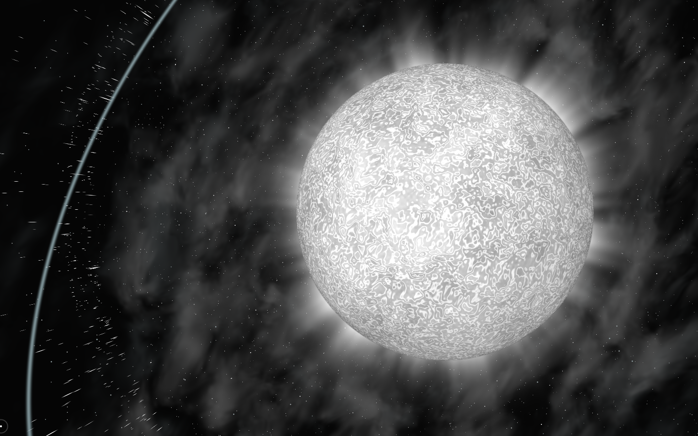
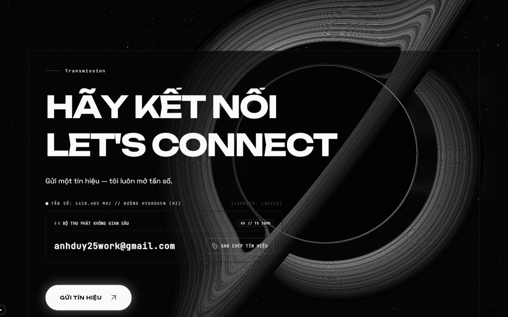
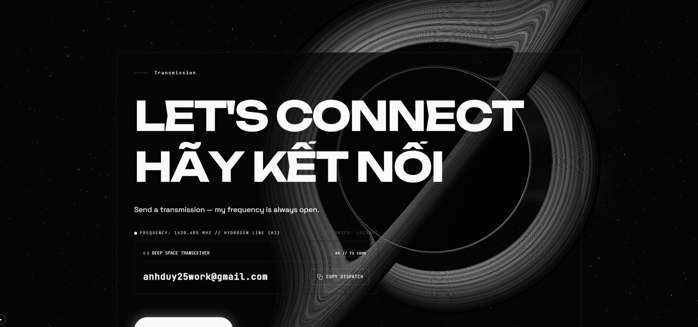
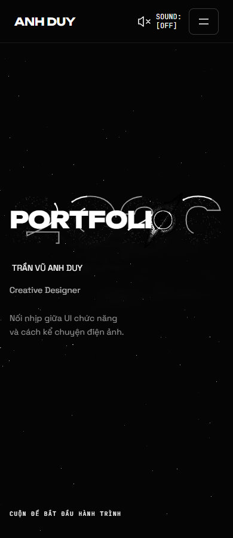
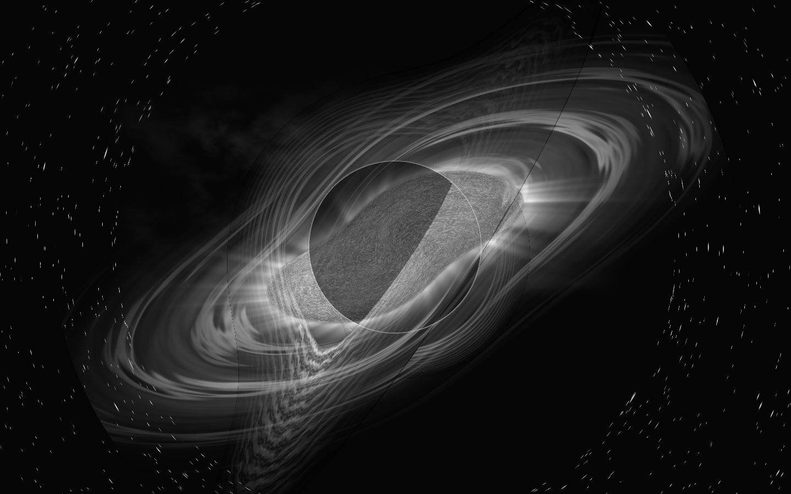
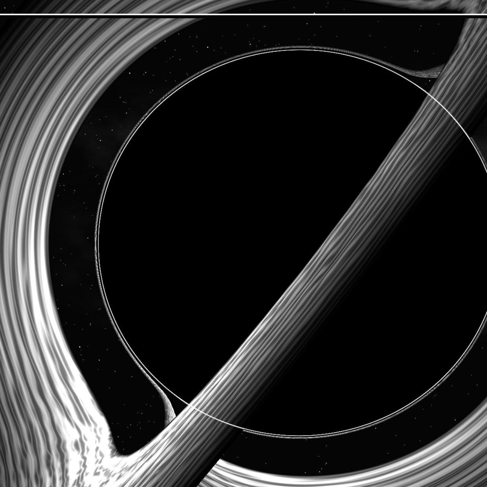

Stellar Odyssey · Bản chỉnh V9 · 13/10/2026
Không gian uốn cong.
Sao lớn co sụp.
Giữ nhịp va chạm đến p=0.44. Từ đó, sóng biến dạng mở ra, sao plasma lớn xuất hiện rồi bị kéo méo và co sụp thành cùng hố đen. Preloader dùng chung ngôn ngữ chuyển động, nối vào O của Hero.
Preloader → Hero
Nền sao cong và giãn quanh lõi; plasma co lại, cùng hố đen lùi vào chữ O. 2026 đã bỏ viền liên tục, giữ sao và vệt sáng chạy.
Works → Contact → Works

Quỹ đạo chậm trước khi hội tụ
Ba figure cùng xoay quanh tâm theo một quỹ đạo chậm, giữ tư thế để đọc hình. Hover/focus/chọn dự án dừng chuyển động; khi cuộn vào finale, góc đang xem được giữ để nối sang hội tụ tăng tốc.
Hố đen giữ lớn khi Contact xuất hiện

Desktop 1440px. Nội dung, bố cục và các hành động Contact giữ nguyên.
1920px, tiếng Anh. Lõi vẫn lớn ở cuối cảnh.Màn hình dọc

2026 giữ sao và runner, bỏ lớp viền nền. Viewport desktop mô phỏng mobile.Ảnh mở đầu và chi tiết HDR

Co sụp và lensing trong preloader.
Crop từ HDR đầy drawing buffer, không upscale ảnh raster.G3 đang chờ bạn duyệt visual. Hiệu năng iGPU và điện thoại thật chưa nghiệm thu; số đo mới, các giới hạn và checklist nằm trong báo cáo kiểm chứng. Các hình/clip ở đây lấy từ bản tích hợp thực tế.